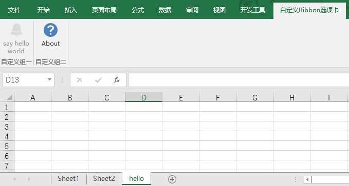
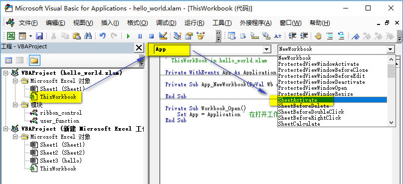

Microsoft-Excel-2010自定义功能区：菜单项Enable状态¶
之前的文章演示了在Excel插件中自定义菜单的基本步骤，本文将以前文的hello_world_addin.xlam为基础，记录进一步控制单个菜单项可用/禁用状态的方法。
假设目标需求是：只有当前WorkSheet的名字是hello时，才允许点击say hello world。换言之，自定义菜单项say hello world一直处于禁用状态，除非当前工作表名称为hello。
这实际上涉及两个方面的问题：菜单项状态的控制和工作表事件的监听。
菜单项状态控制¶
控制Ribbon区域的xml代码提供了菜单项显示状态(getVisible)、可用状态(getEnabled)的属性，并为其指定响应函数。其基本格式为：
Sub user_enabled(control As IRibbonControl, ByRef Enabled)
' @param control为当前菜单项
' 可以在xml中自定义key1 = "val1"，然后此处control.key1调用
' @param Enabled为返回的可用状态
' to do
End Sub当然我们还需要为customUI指定初始化的属性onLoad。以下是xml的示例代码：
<customUI xmlns="http://schemas.microsoft.com/office/2006/01/customui" onLoad="OnRibbonLoad">
<ribbon startFromScratch="false">
<tabs>
<tab id="userRibbon" label="自定义Ribbon选项卡">
<group id="g1" label="自定义组一">
<button id="btn1"
imageMso="Alerts"
size="large"
label="say hello world"
onAction="user_fun"
getEnabled="user_enabled"/>
</group>
<group id="g2" label="自定义组二">
<button id="btn2"
imageMso="Help"
size="large"
label="About"
onAction="about_fun"/>
</group>
</tab>
</tabs>
</ribbon>
</customUI>接下来新建ribbon_control模块，写入如下的响应事件的代码：
'''
' ribbon control
'''
Public MyRibbonUI As IRibbonUI
' on load
Private Sub OnRibbonLoad(ribbonUI As IRibbonUI)
Set MyRibbonUI = ribbonUI
End Sub
' enable status
Sub user_enabled(control As IRibbonControl, ByRef Enabled)
If ActiveSheet.Name = "hello" Then
Enabled = True
Else
Enable = False
End If
MyRibbonUI.Invalidate ' submit status
End Sub注意，其中MyRibbonUI.Invalidate强制进行Ribbon UI状态的更新。
事件监听¶
此时任意打开一个工作簿，然后双击加载插件hello_world.xlam，效果如下：

如果加载插件时，当前工作表恰好是hello，则say hello world菜单项始终处于可用状态；否则将处于禁用状态。并且无论如何切换工作表，say hello world一直保持初始状态不变。这是因为当前代码只在初始化Ribbon区域时根据当前工作表名称更新了一次状态。
因此，接下来需要在触发激活工作表事件时强制刷新Ribbon状态。好在VBA已经为我们提供了该事件：
尝试一：workbook事件¶
在hello_world.xlam的ThisWorkBook模块下插入工作表激活事件Workbook_SheetActivate：

填入刷新Ribbon区域的代码：
Private Sub Workbook_SheetActivate(ByVal Sh As Object)
MyRibbonUI.Invalidate ' update status
End Sub不出意外的话，我们是看不到预期效果的。
因为以上写的是hello_world.xlam工作簿范围内的切换工作表事件，而我们实际切换的却是其他Excel数据文件的工作表，自然就无法正确响应了。
尝试二：Application事件¶
我们的代码写在插件hello_world.xlam中，需要监听的却是跨工作簿的事件，这就需要Application级别的事件监听，以响应所有打开的工作簿事件。
首先将hello_world.xlam的ThisWorkBook模块更改为以下代码：
' ThisWorkBook in hello_world.xlam
Private WithEvents App As Application ' 定义Application类型的事件监听App
Private Sub Workbook_Open()
Set App = Application ' 在打开工作簿后进行初始化
End Sub此时，即可在代码窗口顶部的左侧下拉菜单中，选择刚刚创建的App对象，然后在右侧下拉菜单选择对应的SheetActivate事件：

最后填入强制刷新Ribbon区域的代码：
Private Sub App_SheetActivate(ByVal Sh As Object)
MyRibbonUI.Invalidate ' submit status
End Sub保存后重新打开即可实现预期效果，参考示例文件hello_world_addin_enable_status.xlam。